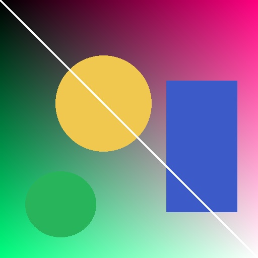
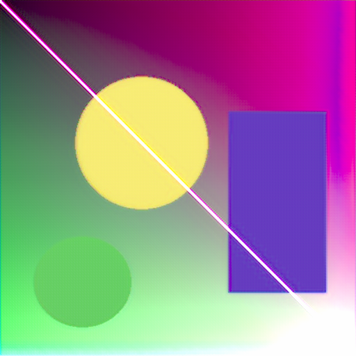
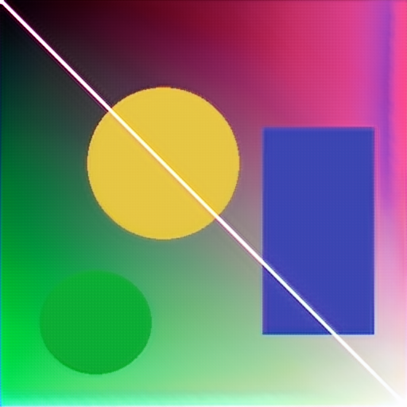

ParamISP learns both directions of a camera ISP, controlled by the camera parameters found in EXIF (ISO, exposure time, focal length, f-number, white balance and the camera→sRGB colour matrix) through a hyper-network dubbed ParamNet.
| Direction | Input | Output |
|---|---|---|
| Inverse ISP | sRGB image + camera params | Bayer RAW |
| Forward ISP | Bayer RAW + camera params | sRGB image |



app.py, both tabs, EXIF auto-read, ZeroGPU-ready) is already in this
repository, but Gradio Spaces require paid hardware or a free ZeroGPU allocation.
Once hardware is available the SDK is switched to gradio in the README
front matter and the app runs unchanged.
Run the interactive demo locally:
python -m venv .venv . .venv/bin/activate # Windows: .venv\Scripts\activate pip install -r requirements.txt python app.py
Checkpoints are fetched automatically (the app downloads the authors'
weights.zip on first use, or reads a Hub repo given by
PARAMISP_WEIGHTS_REPO).